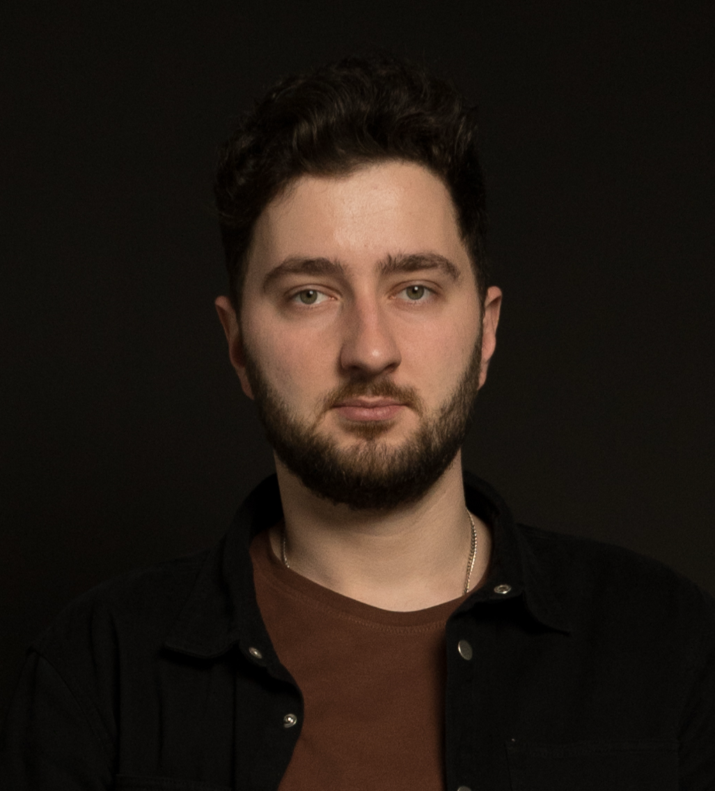

<section id="about">
<!-- body -->

<h2 class="abs" style="left:890px;top:338px;width:910px;font-size:100px;font-weight:800;line-height:116px">НИКИТА<br>НАГОРНОВ</h2>
<p class="abs body" style="left:895px;top:645px;width:908px;font-size:48px;line-height:64px">iOS · «Исходный код»</p>
<p class="abs acc" style="left:895px;top:796px;width:908px;font-size:40px;line-height:56px">Алгоритмы. Компиляторы. Айфоны.</p>
<!-- /body -->
<aside>Давайте знакомиться. Я Никита Нагорнов, старший iOS-разработчик в «Исходном коде». Прошёл путь от олимпиадного программирования и разработки компиляторов до перекрашивания кнопок на айфонах.<br><br>Сегодня как раз попробуем подружить эти две части моей жизни: алгоритмы из учебника и код, который действительно бежит на телефоне.<br>[→ следующий слайд]<br><br>──────────<br>Источники и условия<br>Биография и портрет: пользовательский референс /Users/nagornov/Downloads/IphoneLLV-v2-c-заметками.pptx, слайд 2. Публичный кейс текущего доклада с перечисленными проектами не связывается.<br></aside>
</section>
